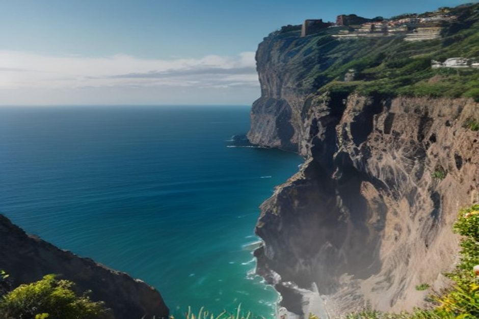
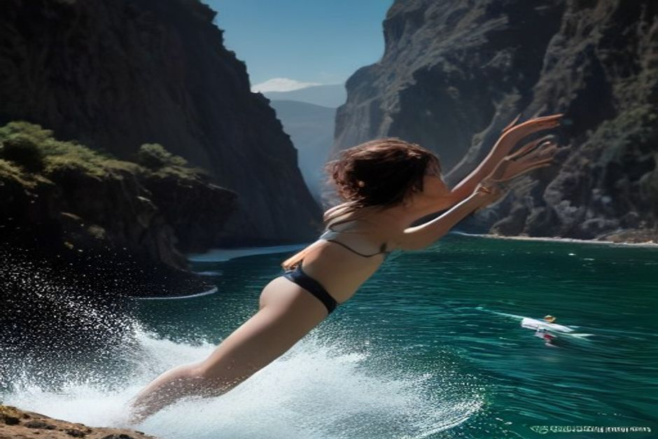

Cliff jumping in Madeira is only genuinely safe in a small number of checked, controlled spots — most of the island's coast is sheer volcanic rock with no marked entry, no lifeguard and currents nobody has scouted for you. Here's where jumping into the sea is actually done properly, where to leave it alone, and how it works on a private boat.
Is cliff jumping actually safe in Madeira?
Only when someone has checked the water first. Madeira's coastline formed from volcanic lava flows, which means the base of most cliffs is a mess of submerged rock, sudden depth changes and swell that can shift a jump zone from calm to dangerous within an hour. There's no island-wide list of "approved" jump spots and no lifeguard patrol along the rocks the way there is at a managed beach. The two ways people jump into the sea here safely both rely on local knowledge doing the checking for you: a guided coasteering tour, where an operator knows the specific ledge and has jumped it themselves that season, or jumping directly off a boat, where the crew checks depth and current on the spot before anyone goes in.

Where can you jump into the sea in Madeira?
Two realistic options exist for most visitors. Coasteering tours run along parts of the south coast and combine swimming, scrambling over rocks and short, guided jumps from low ledges — the operator picks the jump points and calls them off if the swell is wrong that day. The other option is a boat: sheltered coves like Fajã dos Padres near Câmara de Lobos are reached easily by sea, and jumping off a boat's swim platform into open, checked water is a lower, more controlled version of the same idea, done without scrambling over rock at all.
What's the difference between jumping off a cliff and jumping off a boat?
Height and how well the water below has been checked. A cliff jump means committing to a fixed drop onto whatever is underneath — rock, current or depth you can't fully see from above, even on a guided tour. Jumping off a boat is a much smaller drop, usually a metre or so from the swim platform or gunwale, into water the crew has just idled through and confirmed is clear and deep enough. It's the difference between trusting a rock ledge you've never stood on before, and trusting a crew who anchor in the same cove every week and know exactly what's underneath.
Is Fajã dos Padres good for jumping into the water?
Yes — it's one of the more reliable spots on the south coast precisely because it's sheltered. The cliffs around the cove cut the wind that roughs up open water elsewhere, so on most days it sits calm and clear, with a pebble beach and easy access straight off a boat. It's also reachable by cable car from the clifftop for anyone visiting by land, but arriving by sea is what puts you directly in front of the water rather than at the top of a 300-metre drop.
What should you check before jumping into the sea anywhere in Madeira?
Depth and what's underneath, first — never jump into water you or a guide hasn't confirmed is clear of rock. Then swell and current: a cove that's flat at 10am can have a different sea state by 2pm, so conditions get rechecked on the day, not assumed from a previous visit. Someone should be watching from above or from the boat every time, and jumps should stop the moment cloud cover, wind or swell changes noticeably. None of this is exotic advice — it's the same routine a boat crew runs through before letting anyone into the water at all.

Do you need a guide or a tour to jump safely?
For an actual cliff, yes — local knowledge of that specific ledge, that season's rockfall and that day's swell isn't something you can judge by eye from the top. For jumping off a boat, that guiding role falls to the crew: choosing the cove, idling through it to check depth and current, and giving the go-ahead. This is exactly the stop built into Chifbay's private Day Trip from Marina do Funchal — after Câmara de Lobos and the drone shot at Cabo Girão, the boat anchors at Fajã dos Padres to swim, jump in and paddleboard, with the crew handling the checking so guests don't have to guess.
The cliffs make the photos. The checking is what makes it safe to jump at all.
Madeira's coastline rewards getting in the water — it just isn't a place to freelance a jump off an unfamiliar ledge. Pick a controlled spot, let someone who knows it check the water first, and the jump itself is the easy part.